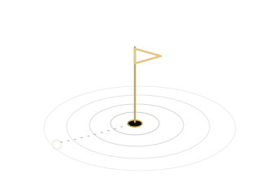

See your swing
like a tour pro
Drop a swing clip here, or use Choose video. Everything runs on your device — your footage never leaves the phone.
0 / 0
Scrub to the right frame, then tap a checkpoint to move it there.